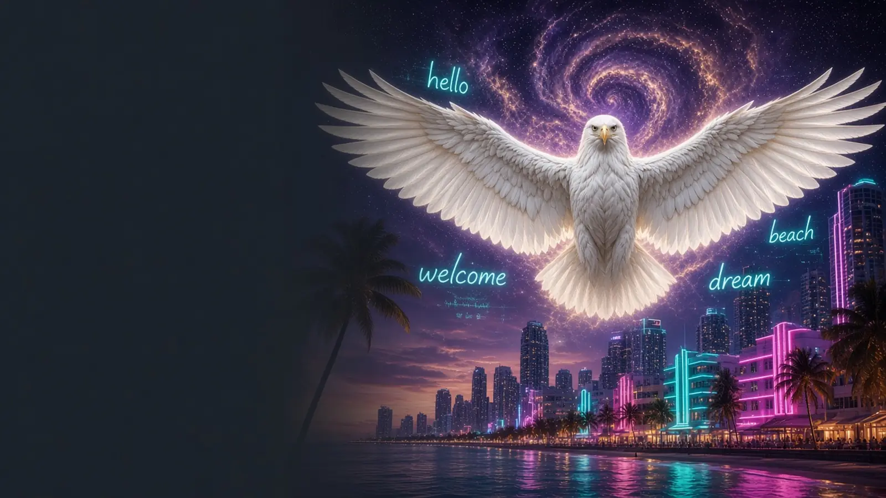
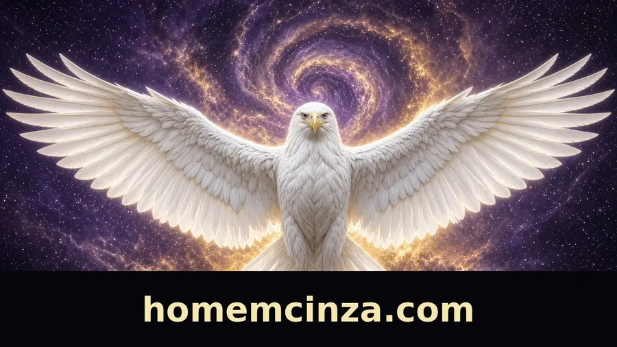

ESCOLA DE INGLÊS CINZA · 100% GRÁTIS
Águia PrimordialEnglish
A Águia fala cada palavra em inglês e em português. Você ouve, repete e segue — do primeiro hello até pedir a conta em Miami.
- 6.239palavras com voz
- 63temas
- 33histórias
- 0reais para estudar
COMECE POR AQUI
O método da Águia, em 5 passos
O ensinamento mais importante do aplicativo vem antes de qualquer palavra: um propósito e uma data. Depois, pouco por dia, ouvindo.

“Tenha um propósito definido. Sem ele, o inglês vira lista. Com ele, vira caminho.”
“Have a defined purpose. Without it, English is a list. With it, it becomes a path.”
- 1
Propósito e data
Escreva por que o inglês importa — o trabalho, a viagem, a conversa que você ainda não consegue ter — e marque uma data.
Escrever o meu porquê → - 2
Dez palavras por dia
Ouvir, repetir e seguir. A palavra aparece com foto, a Águia fala em inglês e em português. Deslize para a próxima.
Abrir o vocabulário → - 3
O Ninho: falar como criança aprende
45 frases do dia a dia (manhã, casa, rua, comida, ajuda). Listen first. Don’t translate yet.
Entrar no Ninho → - 4
Histórias do dia a dia
33 cenas curtas com foto, áudio, legenda e tradução: I need coffee, I’m lost, At the market…
Ver as histórias → - 5
Revisar e ver o progresso
A palavra muda de lugar (difícil, médio, fácil) conforme você acerta. Tudo fica salvo no seu aparelho.
Revisão · Progresso →
EXPERIMENTE AGORA
Toque e ouça: inglês, depois português
Uma amostra do jeito da Águia, direto no site. Usa a voz do seu próprio aparelho.
Frases ouvidas neste aparelho: 0 · ver as 6.239 palavras no feed em tela cheia → · no app →
TUDO PARA APRENDER
As trilhas de inglês
63 temas
Casa, comida, corpo, viagem, trabalho, hotel, praia… cada tema abre as suas palavras.
📚Biblioteca
Procure qualquer uma das 6.239 palavras e ouça na hora.
🦅Super inteligência
Pergunte. A Águia responde em português e em inglês. “Como se diz obrigado?”
🗣️Conversa: dois amigos
30 minutos de conversa sobre o dia, em inglês e em seguida em português.
🎧Chegada · escuta guiada
Devagar, com pausas. Ouça em inglês ou português, com MP3 para baixar.
🗝️Chaves
11 textos bilíngues: What you repeat, Rehearse, then walk, One key today.
💪Treino em inglês
Vídeos de 30 minutos: a voz incentiva em inglês e explica em português.
💃Dance 30 minutos
Put on a song and dance. Aprender inglês mexendo o corpo.
🧭O material completo
Tudo o que a escola já guarda — e o que entra toda semana.
TAMBÉM NA REDE
Escola de Inglês Cinza · Histórias
Inglês por imagem e voz, 100% online, e as histórias de presente da Águia Primordial.
INGLÊS COM DESTINO
Vai para Miami? Leve a Águia e o GPS
Solara GPS: Miami Beach
Mapa GPS de Miami para brasileiros: satélite, bairros, praias, hotéis, Street View, preços em dólar e em real, câmbio e tempo ao vivo.
Abrir o Solara GPS ↗O kit de inglês da viagem
Treine as frases da aba Em Miami lá em cima e depois explore a cidade no mapa. Aprender inglês fica fácil quando ele tem um lugar.
Mais Miami do universo Solara: MIAMI DRIVE SOLARA 2088 · SOLARA SKY 2088
A ESSÊNCIA DA ÁGUIA
Expansão de consciência, em três línguas
A Águia Primordial é branca como a neve: um arquétipo de paz, grandeza e visão larga. Aqui o inglês anda junto com o despertar — e a voz é a da Águia, em português, inglês e espanhol.
Espelho
A aba da verdade. O que você não olha, continua mandando.
Co-criar a realidade
Intenção, sentimento e a crença que solta. Com PDF.
Salto quântico
Do laboratório à vida: uma troca de estado inteira.
Os 5 níveis de realidade
A Águia narra; cada imagem acompanha a frase.
Nikola Tesla · 3·6·9
Uma homenagem, com a história real.
Artes do canal
Andrômeda, o tigre celestial, os guardiões e o símbolo cinza.
Original cinza vibracional
44 músicas autorais em ordem. Toque e ouça.
Guia do Cinza
Leis herméticas, estoicismo, neuroplasticidade, sono, metacognição…
A REDE DE APP CINZA
Mais ferramentas, todas grátis
APOIA-SE
O acesso é gratuito. E vai continuar.
Quem quiser apoiar financeiramente o projeto pode colaborar — sem nenhuma obrigação. Qualquer valor ajuda a manter tudo aberto para todo mundo.
- 🎙️A voz da Águia em inglês, português e espanhol
- 📦Palavras, cenas e temas novos toda semana
- 🌐Servidores e os próximos apps da rede
link.mercadopago.com.br/homemcinza